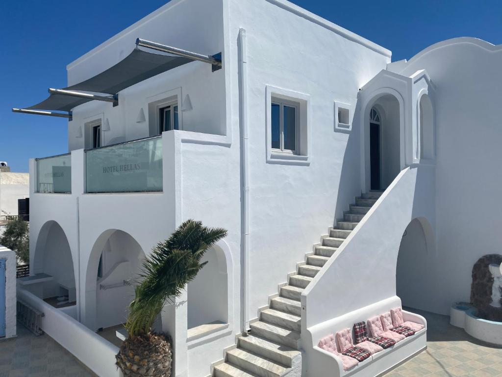

Hotel Hellas
Situated just a few minutes walk away from Fira’s central square, Hotel Hellas has an outdoor pool with a sun terrace and offers simply decorated rooms. Free WiFi is available in the reception and the pool area. Each room includes a private bathroom with shower and comes equipped with a TV with satellite channels, mini fridge and air conditioning. Some of the rooms offer views over the sea or the pool. Guests will find restaurants and bars within a short walk from Hotel Hellas. Ormos Athinios Port is 10 km away, while Santorini Airport is at a distance of 6.5 km. Free private parking is possible on site. Couples particularly like the location — they rated it 8.6 for a two-person trip. We speak your language!
